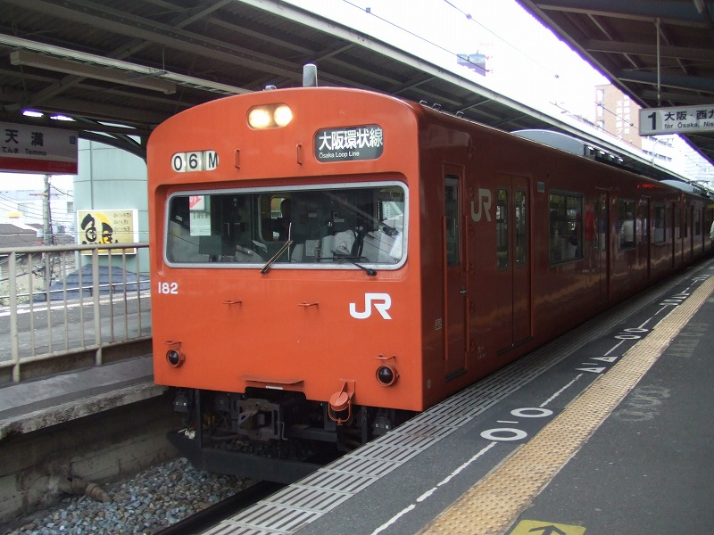
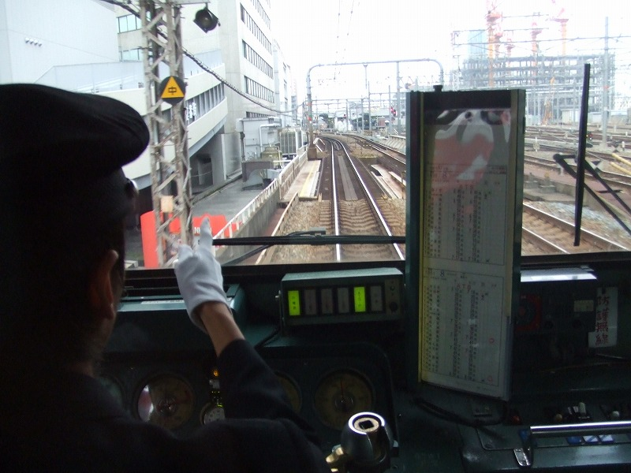
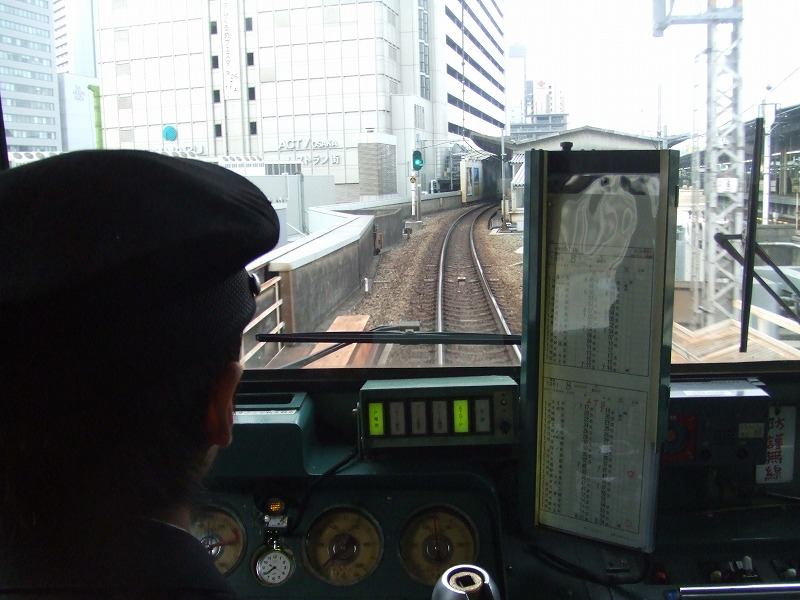
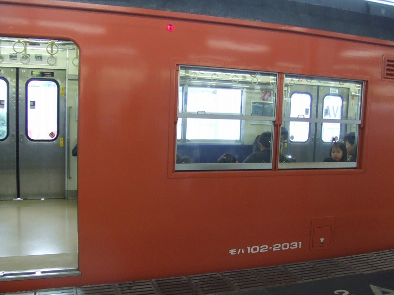

井笠鉄道ツアー出発の朝、天満駅で・・・

最近見ることの減った低です。宝ヲタツアーの朝に北京と尼ヲタの陰謀としか思えないめぐり合わせ。仕方なく撮影。

白い手袋で指差し確認。前回ウチに来たドイツ人がえらくお気に入りだったなあ、コレ。(白い手袋がエレガントとか）

大阪駅に近づきます。なんでこんなん撮影してるんだよワタシ。しかも知らないうちに先頭でガブってるし。

こういう番号もあるんですか？102-xxxという風に３桁までが普通と思ってました。
「何やってんだよアタシ」と肩を落としつつ、井笠ツアーの集合場所に向う鉄子であった。
表の都島エレジーに続く・・・
都島